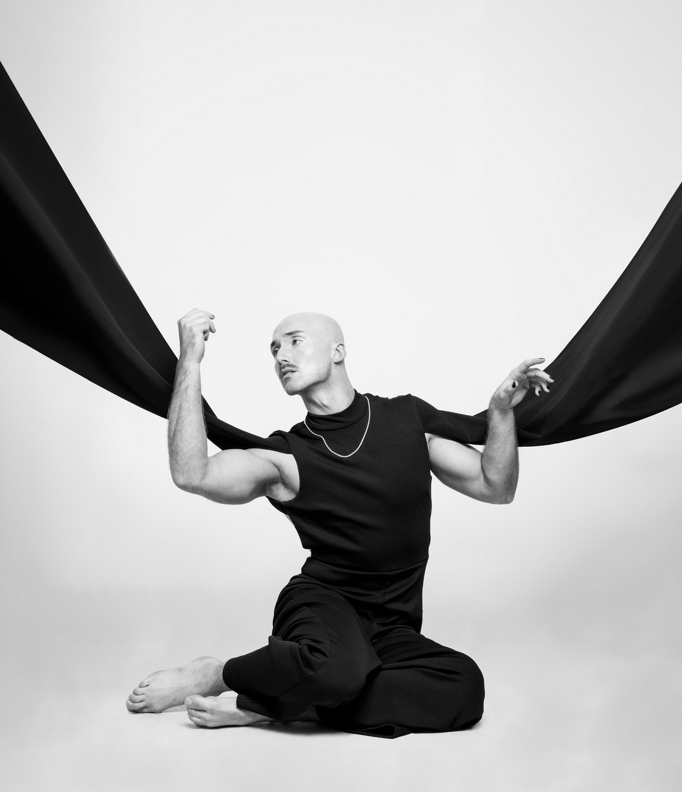
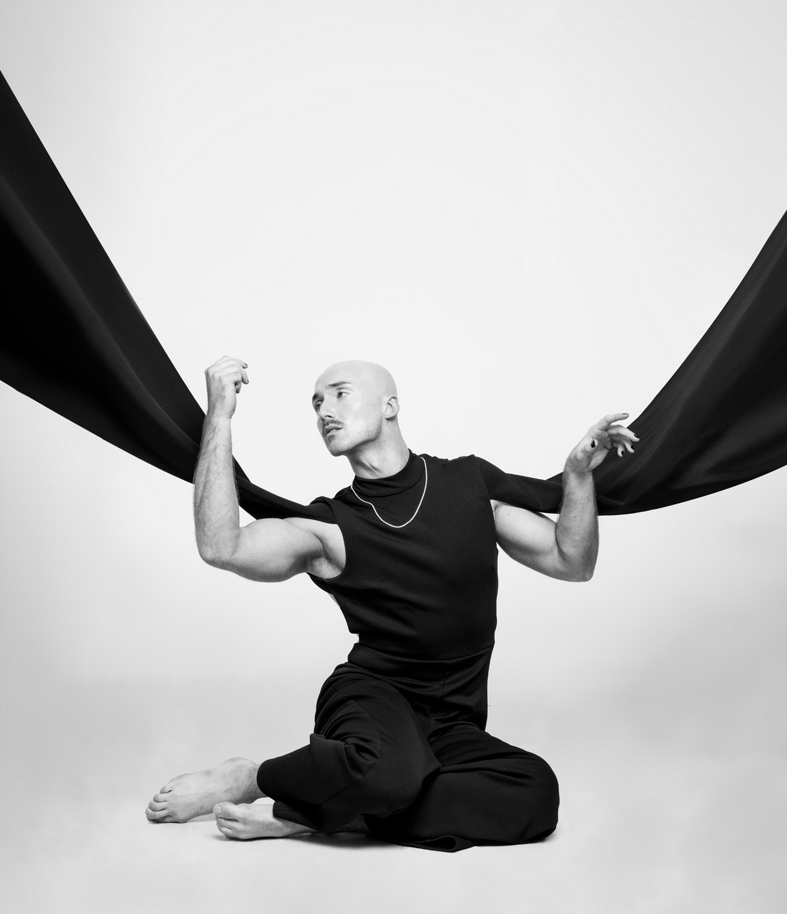

Reflection
Conducting this interview with Dr. J. Logan Smilges reshaped the way I understand queer silence and its relationship to digital spaces which includes spaces for students and spaces for gay men like Grindr. Going into the conversation, I expected and thought that silence was to function mainly as a lack of voice, or presence but that wasn’t the only case with what Dr. Smilges was referring to. Instead, the interview pushed me to see silence as a strategy, a form of resistance, and rhetorical choice that is often deeply intertwined with disability. Preparing the questions and transcribing the conversation made me slow down and really listen, not only to what was being said but pauses, hesitations, and tone shifts that carried meaning beyond words.
Featured Works by Dr. J. Logan Smilges
 


Look Inside "Crip Negativity"
One of Dr. Smilges books, Crip Negativity helped me further understand the meaning of rhetorical absence, queer digital embodiment, and silence. Although my interview questions were based on the Queer Silence most of my questions were inspired from pieces of Queer Silence. Also, Crip Negativity and how Smilges’s critique of liberal disability politics shaped the way I thought about pedagogy, digital spaces, queer resistance, and identity formation. Although my questions in the interview were centered on college-based pedagogy, I found an excerpt from Crip Negativity that I feel opened the door for Smilges to expand across all grade levels, not just college. “But as my high school experience demonstrates, ableism casts a wider net than the language of access is able to capture. In my case, nothing about my education was inaccessible. I could get into the building and to all of my classes. I could understand the lessons and complete the assignments. I had a range of extracurricular activities I could choose from and participate in if I wanted. I had teachers who offered a variety of formal and informal accommodations to help me fulfill course objectives. And yet despite all this access, ableism still managed to make my life absolutely fucking miserable. If anything, I wanted less access, less contact with ableds, less time spent in spaces structured by neurotypicality, and less energy expended accommodating me into a community that exploited my neuroqueerness as an opportunity to ossify its superiority.” (Crip Negativity 3). Furthermore, Dr. Smilges work is groundbreaking that isn’t focused on just one subject or just one grade level but too everyone.
Quotes That I Resonated With
In this drop down menu, I've provided quotes from both readings that I feel resonated with as well as was inspired from when putting together the Webtext.
1. "On Grindr, one cannot help but wrestle with the bodyminds of the users, both individually and collectively, who are not only operating the accounts but visibly plastered all over the screen." (79).
2. "For a Grindr profile picture, the studium might be white teeth in a wide smile, the size of a pectoral muscle, or the density of a pair of eyebrows. These are features of a picture that users are trained to look for, that they are meant to find appealing or at least to notice." (77).
3. "In these cases, the naked body itself can be a punctum, an epidermal jolt that fissures a viewer’s expectations for masculinity, thinness, whiteness, and abledness that tend to define the genre of body pics. But for those users whose bodies conform to normative expectations, the punctums of their body pics are less clear. It’s these such pictures that sometimes leave me wanting more (because I’m horny) but don’t typically prompt my engagement. Barthes feels similarly, writing that “there is no punctum in the pornographic image; at most it amuses me (and even then, boredom follows quickly).” (95).
4. "To combat this erasure, I offer a theory of trans onto-phenomenology that seeks to excavate forms of gender nonconformance that do not reach the level of “the authentic” or “whole.” That is, I offer a counterresponse to transnaturalism that draws on the model of queer silence I describe throughout this book. Silence here is not to be taken as emptiness but as a signifying absence that often coexists with other forms of meaning-making. In the context of trans experience, silence refers not only to the absences of trans people and experiences from archives and public memory but also to the subtleties of gender variance, the ways that nonconforming gender expressions can fly under or around the radar of gender identification." (149).
5. "What I fear gets lost in this particular critique of trans subjectivity, transnormativity, and transnaturalism, particularly in the formulation of piecing as iterative “of neoliberal market economies,” is the fact that neither trans nor disabled people are singularly responsible for the medical-industrial complex, let alone the cisableism that standardizes the white, abled, gender conforming bodymind as normative." (166).
In this drop down menu, I've provided quotes from both readings that I feel resonated with as well as was inspired from when putting together the Webtext.
1. "Access, in this case, is synonymous with integration. The more thoroughly that disabled students are integrated into the world of ableds, the more “appropriate” their education must be—or so IDEA assumes. But this version of accommodation, what I call integrative access, fails to account for how ability operates as a structural norm, informing the ableist cultures into which disabled students are expected to integrate. My experience in high school was deeply shaped by ableism, even though I had all the access I needed for a successful integration. My education was “appropriate,” in accordance with IDEA, but the conditions under which my education took place made it nearly unbearable." (3). I personally resonated with this and found this quote to be extremely important even in today's society. We're living in a society that voices are being silenced and students not apart of the "norm" are left out. This also connects to Dr. Smilges other book since it discusses marginalized voices and those who aren't given the same opportunity to be seen.
2. "No amount of integration can undo the violence woven into the threads of the world as we know it. No number of open doors can air out the toxicity that stinks up the room. Access does not by itself fix ableism. To suggest or imply otherwise is to fall prey to a “cruel optimism” that can only end in disappointment when the access we demand merely shifts the variety of ableism we face (Berlant 2011). That is to say: Even if we get them to let us in, we can’t make them want us there. Even if they say they want us there now, how do we trust them after all this time?" (5).
3. "The unique needs of disabled people of color and those without advanced degrees were dismissed in favor of an agenda that universalized the category of disability by sublimating its contingencies with race and class. Economic rehabilitation appeared possible only because it had been thoroughly deracinated. Whiteness and wealth, through their unspoken centrality, structured the emergence of the disability rights movement, effectively laying the groundwork for a field of disability studies that itself depends on whiteness “as its constitutive underpinning” (Bell 2006, 275)." (14).
4. "One that remains close to my heart. Some of you may be familiar with the Netflix show Special, a semi-autobiographical comedy starring Ryan O’Connell, a gay, white man with cerebral palsy. One of the first season’s central plot lines follows Ryan as he tries to lose his virginity. Like many disabled people, Ryan finds it difficult to navigate sexual relationships, especially in the gay community where whiteness, abledness, and thinness are the bastions of desirability. At the suggestion of a friend, Ryan chooses to hire a sex worker to be his first sexual partner." (46).
5. "As a methodology, crip negativity encourages us to name the feelings that have historically been projected onto disability—pity, disgust, grief, anger, and resentment, to name a few—alongside those feelings that predict its liberal rehabilitation—pride, love, desire, and contentment, among others. Then, importantly, crip negativity urges us to further consider how these feelings regulate the boundaries of disability, as well as how they coincide or conflict with the feelings that mark its exclusions, such as indifference, apathy, hostility, and fear. These latter feelings are those that subtend others’ fungibility and illegibility—feelings felt toward people living on the bad side of town, people fleeing from bad parts of the world, people rotting in confinement for doing bad things, people hurting as collateral damage in wars against bad regimes, people dying en masse for being dealt a bad hand." (67).
Reflection Conclusion
Concluding this Webtext, it was a pleasure interviewing Dr. Smilges as I’ve resonated deeply with their work. Coding our interview to putting together this webtext helped me a lot as I continue my publishing career. I’m forever grateful for Dr. Smilges as they were able to meet with me on such short notice. Although I’ve their work, this webtext really put into perspective their true meaning which reflected with my design choices.